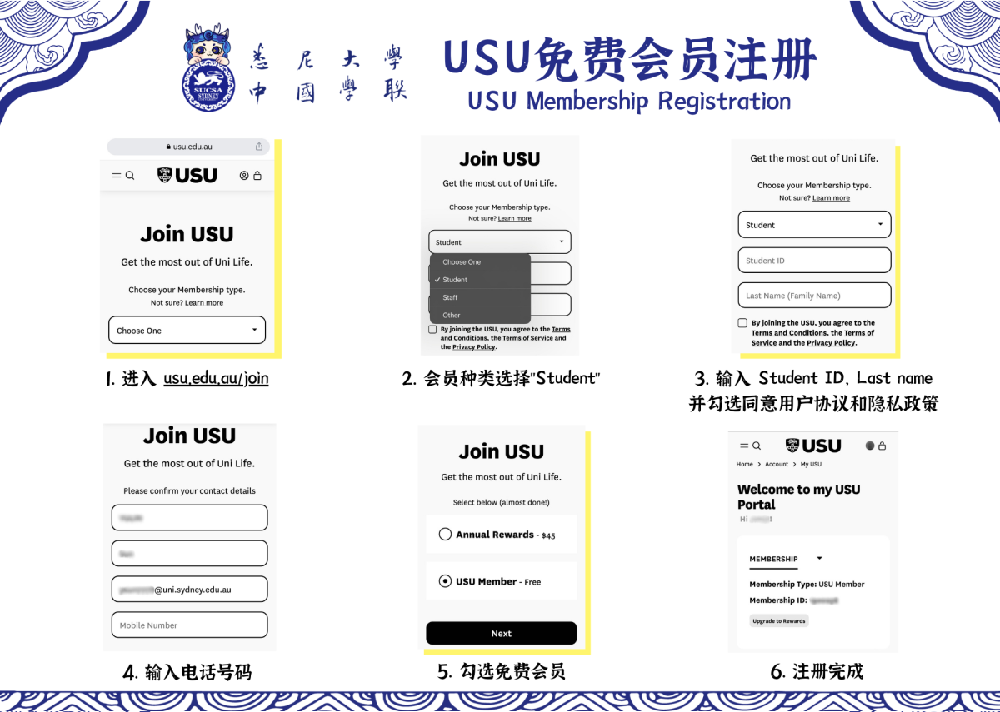
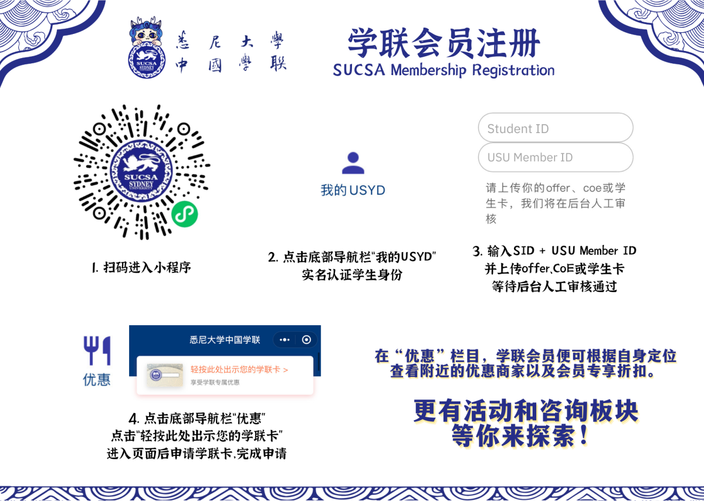

加入学联会员
WHAT
SUCSA什么时候成立的？
悉尼大学中国学生学者联合会（SUCSA）成立于1996年，悉尼大学USU、澳洲政府注册，中国驻悉尼总领馆认证，是悉尼大学历史最悠久也是生命力最蓬勃的华人非盈利志愿者社团。
2. 社团性质是什么？
我们是非盈利，非宗教，非政治的华人学生学者社团。
3. SUCSA的宗旨是什么？
学联致力于服务悉尼大学全体华人学生学者，让大家在异国他乡感受到家一样的温暖。
4. SUCSA目前规模如何？
学联目前共有100余名干事，包括主席团，荣誉席位和十个部门：人事部，秘书部，市场部，文艺部，生活娱乐部，国际交流部，学业与职业规划部，设计部，新媒体运营部和财务部。
WHY
每学期学联组织各种有趣的线上线下活动丰富学生们的课余生活：英语角、篮球赛、一周CP、线上配音大赛等；此外还有各类讲座，企业招聘分享会给学生学业职业规划提供帮助。成为学联会员后，会员可通过学联小程序享受学联最新合作商家优惠折扣，学联官方小助手会在会员群内不定期发布会员专属福利、邀请会员参与会员专属活动，包括烧烤团建、探店尝新、文体活动等。
HOW
Step 1: USU会员

Step 2: SUCSA会员

学联十大社群
学联会员群
小助手会在群内不定期发布会员专属福利、烧烤团建、探店尝新…… 成为学联会员，最新学联合作商家优惠折扣享不停！
新生群
刚拿到悉大offer想要找课友？不知道怎么申请电话卡？想了解更多大学校园生活的打开方式？各类答疑解惑，都能在这里得到答案！
学科群
学科群囊括了人文与社会科学学院、工程学院、理学院、医学与健康学院、商学院、建筑设计与规划学院、法学院。无论你是本科还是研究生,相信每周的导师答疑、干货分享都能给你带来更多学业和生活上的帮助。
图书馆群
一个人学习觉得孤单？上网课做作业没有动力？期中期末压力太大想找人唠唠？在SUSCA图书馆，和同城小伙伴相约线下学习局，在Forest打卡学习时长一起种树，还能在zoom体验三种breakout room，让特殊时期的学习不再枯燥烦闷！
研究学者交流群
公派研究学者，HDR课程学生。在这里和志同道合的专业人才一起展开更多学术探讨交流，获得研究类岗位资讯。
租房群&二手群
找合租室友，想要买卖家具家电、闲置物品，都可以在这里“一站式”搞定，让生活更加便捷
求职群
澳洲求职或国内求职，不定期发布各行各业实习或正式岗位招聘咨询，为你的春招、秋招提供一手资料！
校友地区群
北京、上海、广东 三地大群，在校生或毕业的校友们都可加入。四海为家，校友遍天下，走遍世界都不怕！
小助手会在群内不定期发布会员专属福利、烧烤团建、探店尝新…… 成为学联会员，最新学联合作商家优惠折扣享不停！
新生群
刚拿到悉大offer想要找课友？不知道怎么申请电话卡？想了解更多大学校园生活的打开方式？各类答疑解惑，都能在这里得到答案！
学科群
学科群囊括了人文与社会科学学院、工程学院、理学院、医学与健康学院、商学院、建筑设计与规划学院、法学院。无论你是本科还是研究生,相信每周的导师答疑、干货分享都能给你带来更多学业和生活上的帮助。
图书馆群
一个人学习觉得孤单？上网课做作业没有动力？期中期末压力太大想找人唠唠？在SUSCA图书馆，和同城小伙伴相约线下学习局，在Forest打卡学习时长一起种树，还能在zoom体验三种breakout room，让特殊时期的学习不再枯燥烦闷！
研究学者交流群
公派研究学者，HDR课程学生。在这里和志同道合的专业人才一起展开更多学术探讨交流，获得研究类岗位资讯。
租房群&二手群
找合租室友，想要买卖家具家电、闲置物品，都可以在这里“一站式”搞定，让生活更加便捷
求职群
澳洲求职或国内求职，不定期发布各行各业实习或正式岗位招聘咨询，为你的春招、秋招提供一手资料！
校友地区群
北京、上海、广东 三地大群，在校生或毕业的校友们都可加入。四海为家，校友遍天下，走遍世界都不怕！
悉尼大学中国学生学者联合会（SUCSA）成立于1996年，悉尼大学USU、澳州政府注册，中国驻悉尼总领馆认证，是悉尼大学历史最悠久也是生命力最蓬勃的华人非盈利志愿者社团。学联致力于服务悉尼大学全体华人学生学者，让大家在异国他乡感受到家一样的温暖。
加入学联
联系方式
邮箱：sydneyunicsa@gmail.com
关注我们
邮箱：sydneyunicsa@gmail.com
关注我们


Copyright © 2023 by SUCSA | All rights reserved. Developed by SUCSA